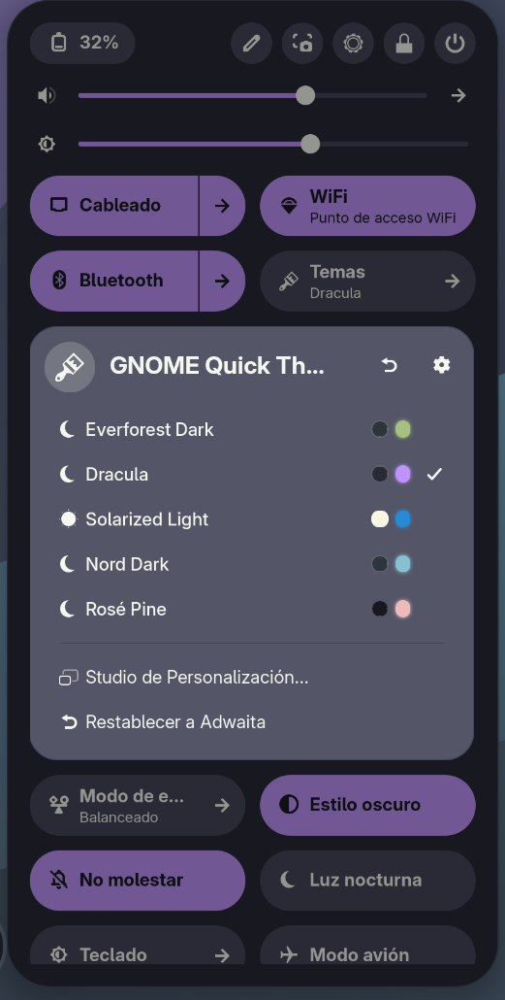
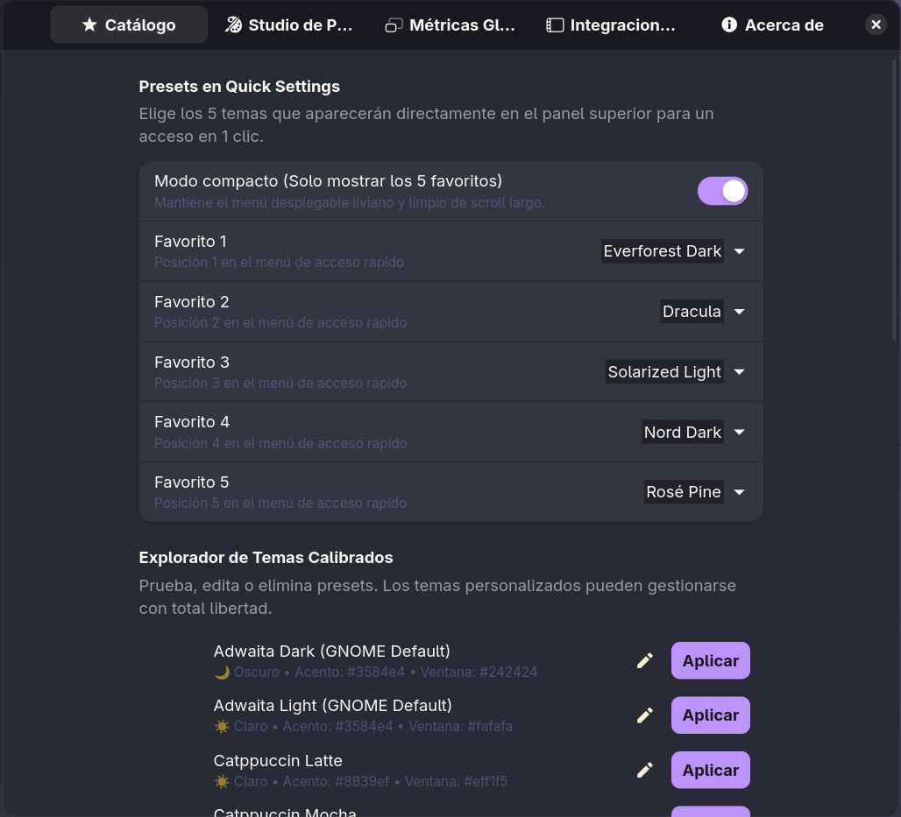
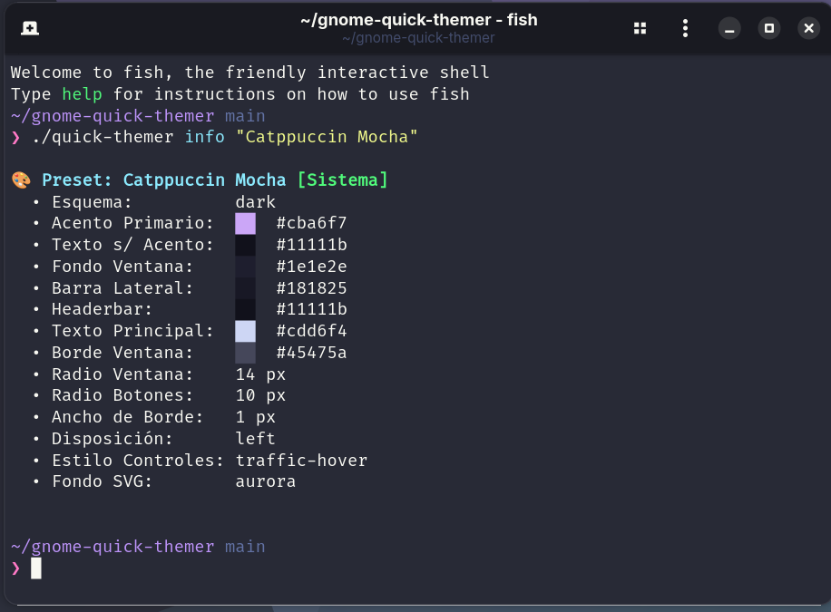

Personalización instantánea
para GNOME & Libadwaita
Cambia, diseña y aplica temas con armonía matemática en 1 clic directamente desde Quick Settings en la barra superior. Con Studio visual en Libadwaita, generador de fondos 4K y sincronización con Firefox y Flatpak.
$git clone https://github.com/angelaguayo/gnome-quick-themer.git && cd gnome-quick-themer && ./install.sh
GNOME Quick Themer en Acción
Mira la fluidez del cambio de temas en 1 clic, la apertura de Studio Libadwaita y la respuesta inmediata de personalización.
Simulador de Tema en Tiempo Real
Haz clic en cualquier paleta para ver cómo transforma instantáneamente GNOME Shell, las ventanas de Libadwaita y el fondo vectorial 4K.
Sincronización Automática de Ecosistema
Aplica la paleta a Libadwaita, GTK 3, GNOME Shell y Firefox
Valores de Color Activos
Diseñado con Filosofía GNOME-Native First
Sin servidores web locales (Node/Flask), sin bloatware. 100% código nativo para la máxima velocidad y fidelidad visual.
1 Clic en Quick Settings
Integración directa en el menú superior de GNOME Shell junto al volumen y Wi-Fi. Muestras de color reales (swatches) para elegir tema de un vistazo.
Studio Libadwaita GTK4
Ventana de personalización profunda nativa con selectores de color en vivo, radio de esquinas (0 a 32px), grosor de bordes y layout de controles (macOS o GNOME).
Live Hot-Reload en Wayland
Actualización visual instantánea sin cerrar sesión ni reiniciar la Shell. Mediante un pulso en dconf, Mutter recarga los estilos CSS sin perder tus ventanas.
Fondos 4K Vectoriales
Generador matemático en Python puro sin dependencias externas. Genera y establece automáticamente un fondo SVG 4K que combina a la perfección con tu paleta.
Ecosistema Completo
Sincroniza tus temas en Libadwaita (GTK4), aplicaciones clásicas GTK3, GNOME Shell, Flatpaks aislados y navegadores Firefox / LibreWolf vía userChrome.css.
CLI Headless Independiente
El binario ./quick-themer opera sin interfaz gráfica, perfecto para dotfiles, scripts de inicio, atajos de teclado o servidores con zero dependencias pip.
Capturas de Pantalla Reales
Diseño refinado, coherente y perfectamente integrado con el estándar visual de GNOME.

Menú Quick Settings
Muestras de color en vivo y presets favoritos en 1 clic

Studio Libadwaita GTK4
Editor de paleta visual, métricas de esquinas y disposición de botones

CLI Headless de Terminal
Gestión rápida, listado con colores ANSI y compilación para dotfiles
Catálogo de 26 Paletas Calibradas
Desde clásicos de programación como Catppuccin, Tokyo Night y Nord, hasta estilos vibrantes como Cyberpunk y Rosé Pine.
Instalación Rápida
Instala las dependencias de compilación y ejecuta el instalador en 1 minuto.
1. Instala las dependencias del sistema:
sudo dnf install python3 sassc glib2-devel
2. Clona el repositorio e instala:
git clone https://github.com/angelaguayo/gnome-quick-themer.git
cd gnome-quick-themer
./install.sh
1. Instala las dependencias del sistema:
sudo apt install python3 sassc libglib2.0-dev-bin
2. Clona el repositorio e instala:
git clone https://github.com/angelaguayo/gnome-quick-themer.git
cd gnome-quick-themer
./install.sh
1. Instala las dependencias del sistema:
sudo pacman -S python sassc glib2
2. Clona el repositorio e instala:
git clone https://github.com/angelaguayo/gnome-quick-themer.git
cd gnome-quick-themer
./install.sh
1. Instala las dependencias del sistema:
sudo zypper install python3 sassc glib2-devel
2. Clona el repositorio e instala:
git clone https://github.com/angelaguayo/gnome-quick-themer.git
cd gnome-quick-themer
./install.sh
💻 Comandos Rápidos del CLI (Terminal)
# Listar paletas disponibles
./quick-themer list
# Aplicar un tema de inmediato
./quick-themer apply "Catppuccin Mocha"
# Ver detalles técnicos de una paleta
./quick-themer info "Tokyo Night"
# Crear una paleta personalizada por línea de comandos
./quick-themer custom --save --name "MiTema" --scheme dark --accent "#ff6600" --bg "#1a1a1a"
Compatibilidad de Distribuciones
Funciona de forma fiable en cualquier sistema Linux con GNOME Shell 45 o superior.
| Distribución | Versión Mínima | Estado | Detalles |
|---|---|---|---|
| Fedora | 39+ | Excelente | Primera clase — Entorno de referencia de GNOME |
| Ubuntu | 24.04 LTS+ | Excelente | Compatible con GNOME 46 y versiones posteriores |
| Arch Linux / Manjaro / EndeavourOS | Rolling | Excelente | Siempre con la versión más reciente de GNOME |
| Debian | 13 (Trixie)+ | Compatible | Requiere GNOME 45 o superior |
| openSUSE Tumbleweed / Leap | 15.6+ / Rolling | Compatible | Totalmente soportado en variantes GNOME |